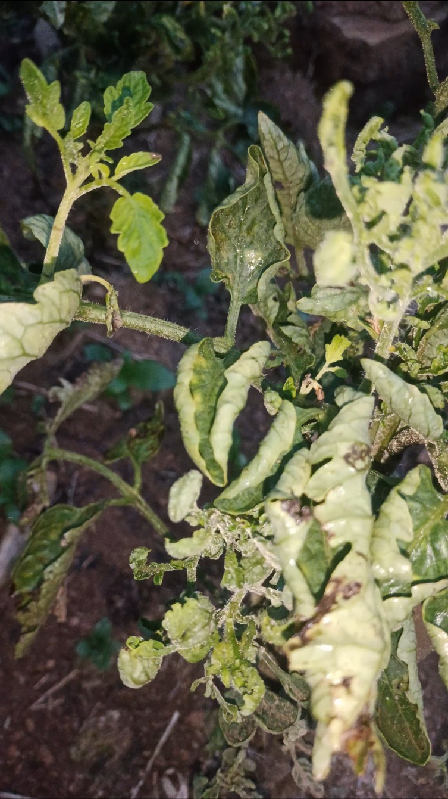
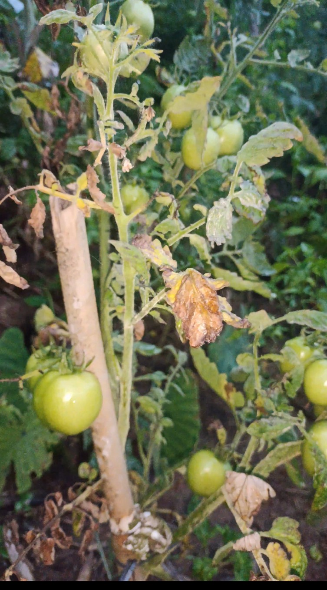
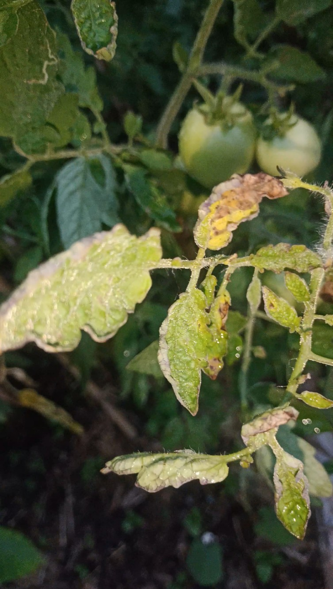
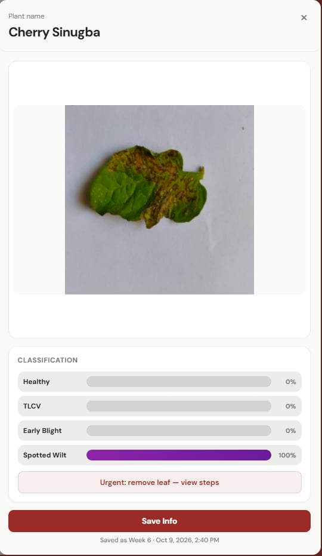
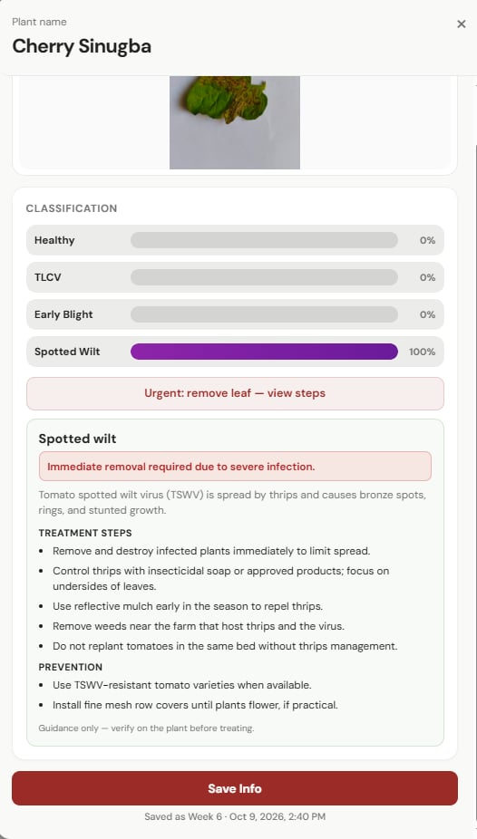

Farm blueprint
Lay out your plot as a grid, up to 10 rows by 10 columns, and give every tile a plant name.
ExploreTomato Insight maps your farm tile by tile, checks that every photo really is a tomato leaf, then scores healthy plus three diseases, and tells you what to do next.






Set the rows and columns of your plot, then name each tile so every plant has its own record.
Upload a photo to a tile. It is checked for a real tomato leaf first, then scored across four conditions.
Read the urgency and care steps for the top match, then save the scan so you can follow the plant over time.
Take a photo of a tomato leaf. The app checks that the picture is a tomato leaf, then scores it as healthy, yellow leaf curl, early blight, or spotted wilt. The highest score is the result, and care steps are shown for that match.


Lay out your plot as a grid, up to 10 rows by 10 columns, and give every tile a plant name.
ExplorePhotos that are not tomato leaves are turned away, so you never act on a false reading.
ExploreSide-by-side confidence for healthy, TLCV, early blight and spotted wilt on one panel.
ExploreTreatment steps, prevention tips and an urgency note written for the disease you actually have.
ExploreSaved scans stay attached to their tile, so you can see whether a plant is recovering.
ExploreSign-in is handled by Firebase Authentication, and your farm data stays with your account.
ExploreEach scan returns a confidence score for all four, so you can see how close the call was.
Upkeep advice instead of treatment: even watering, balanced feeding, and keeping foliage off the soil.
Leaves curl upward and yellow, and fruit set drops. Control whiteflies and pull severely infected plants.
Brown ringed spots on lower leaves that can strip a plant bare. Improve airflow and water at the base.
Bronze spots, rings and stunted growth. Remove infected plants early and manage thrips.